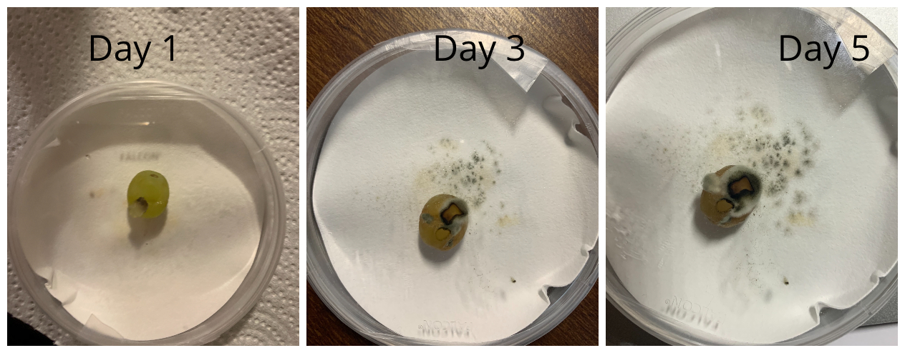

Hypothesis
My microbe will infect the grape.
Description of experiment
For this experiment, I placed one sample of my microbe in a petri dish with a grape and kept it at room temperature. For my control, I placed the grape in a petri dish without my microbe. I then placed both petri dishes in a drawer in my room, so that they would not be exposed to any light. I then observed the growth of my microbe for 5 days and recorded the results.
Results
Treatment Group 1(Plug of microbe placed with grape)
My microbe infected the grape.
Control Group (Petri dish without grape)
The grape did not show any symptoms of infection
Conclusion
- My hypothesis was correct, my microbe does infected the grape. The results can be said to be similar to Experiment 2 in the sense that my microbe likes to consume plant nutrients.
- The control group did not show any signs of infection because it was not exposed to my microbe.
- The nutrients in the grape were absorbed by my microbe to grow.